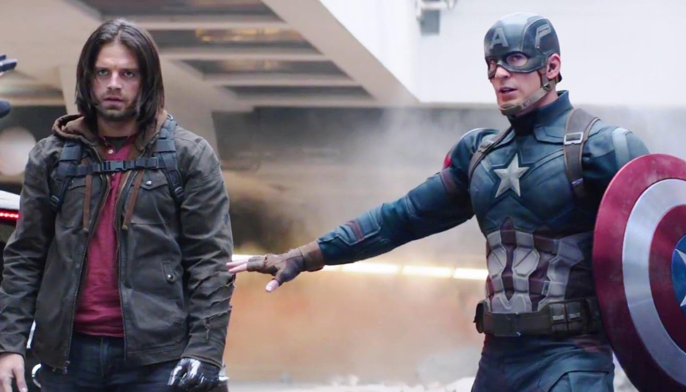

Marvel Studios has built a reputation for keeping its cards close, and its performers rarely volunteer more than a smile and a carefully worded deflection. That is what made a recent comment from Sebastian Stan stand out. Asked about Avengers: Doomsday, the actor who has played Bucky Barnes since 2011 offered a forecast that sounded less like a promotional line and more like a warning.
"I’m sure it’s going to be probably heartbreaking, in a lot of ways," Stan revealed. "We’ll see who makes it to the next level."
With the film scheduled to open in theaters on December 18, 2026, those words have taken on extra weight. They also raise a fair question: how much does an actor who admits he has not seen the finished film really know, and what can reasonably be read into a few measured sentences?
Fifteen years in the same boots
Stan's tenure in the Marvel Cinematic Universe is among the longest in the franchise. He first appeared as James Buchanan "Bucky" Barnes in 2011's Captain America: The First Avenger, playing the loyal friend of Steve Rogers in a wartime adventure. The character's later transformation into the Winter Soldier, a brainwashed assassin controlled by Hydra, turned a supporting role into one of the franchise's most compelling arcs, and it gave Stan the chance to play a man haunted by what he had been forced to do.
Over the years Bucky has survived brainwashing, a civil war among the Avengers, and the Thanos snap that erased half of all life, and he returned in the Disney+ series The Falcon and the Winter Soldier to work through the guilt of his past. In 2025's Thunderbolts* he appeared as a member of Congress, a shift that placed him between politics and the team of antiheroes at the center of that film. Along the way, Stan built a career outside the franchise as well, earning wide acclaim for The Apprentice and A Different Man. That range may explain why his reading of a blockbuster script tends to focus on emotional texture rather than spectacle.
An actor working in the dark
Stan was candid about how little he knows. "I haven't seen the movie, and I don't know how it turned out," he acknowledged. The admission fits with remarks he made earlier to Le Journal du Dimanche, in which he said he had filmed "scattered scenes" in isolated setups without ever receiving a complete, unredacted script.
This is standard practice at Marvel. The studio has long protected its biggest surprises by handing actors only the pages they need, shooting key moments against green screens and sometimes filming alternate versions of important scenes. For a project the size of Doomsday, which brings together performers from several corners of the franchise's history, those protections are even tighter. A cast member can finish a shoot and still be unable to describe the movie's shape, which means that even a veteran like Stan is speaking from instinct as much as information.
Still, instinct counts for something. Few people understand the tonal rhythms of this universe better than someone who has lived inside them for a decade and a half, and Stan's willingness to use a word like "heartbreaking" suggests that the scenes he filmed carried real emotional heft.
What the film is known to involve
Stan's remarks make more sense when set against what Marvel has confirmed. Avengers: Doomsday reunites directors Joe and Anthony Russo with the franchise, ending a gap since Avengers: Endgame. The brothers' two previous Avengers films, Infinity War and Endgame, together grossed more than $4 billion worldwide, and both were built around the idea that victory would come at an enormous personal cost. The screenplay is credited to Michael Waldron and Stephen McFeely.
The villain is Doctor Doom, played by Robert Downey Jr., who returns to the franchise in a new role after concluding Tony Stark's story in Endgame. The first trailer, released in the summer, centered on the return of Chris Evans as Steve Rogers, a reunion that Stan alluded to when he described catching up with old co-stars. The film's announced cast also spans several corners of the Marvel world, including performers associated with the X-Men, the Fantastic Four and the Thunderbolts, along with names such as Chris Hemsworth, Tom Hiddleston and Pedro Pascal.
The release itself has had a bumpy road. The film was first dated for May 2025 under an earlier title, then moved to May 2026 and finally to December 18, 2026, where it will open on the same weekend as Dune: Part Three. A direct follow-up, Avengers: Secret Wars, is scheduled for December 17, 2027.
Home again: nostalgia on set
Not all of Stan's comments were grim. Asked about reuniting with long-time castmates such as Chris Evans, he described a warm, reflective atmosphere that sounded more like a class reunion than a blockbuster shoot.
"I got a chance to reunite with everyone. It was very nostalgic to look back, and think about all of these years that we've known each other, and grew up together. It's incredible in that way. It's been a family and it never stops being that way."
That sentiment may be the key to understanding the movie's emotional design. Marvel's most powerful moments have often drawn on the real relationships between actors who spent years working side by side. If Doomsday is meant to be heartbreaking, the sense of shared history that Stan describes is likely to be part of the reason it works.

Reading between the lines
Stan's phrasing has set off a wave of speculation, and it is worth separating what is reasonable inference from what is guesswork. Nothing in his comments confirms any specific outcome for any character, and Marvel has not commented on them. Still, three threads stand out.
- The weight of the title: In comic book usage, a name like Doomsday signals destruction on a grand scale. Stan's talk of heartbreak is consistent with a story in which the heroes pay a price, though the studio has not said who might be affected.
- The bridge to Secret Wars: His line about seeing who "makes it to the next level" suggests a story that narrows the field before the follow-up film. That reading matches the structure of a two-part finale, in which the first film raises the stakes and the second resolves them.
- Bucky's own path: Bucky Barnes has endured one of the longest and most painful redemption arcs in modern superhero cinema. Whether Doomsday brings that journey to a close or pushes it somewhere new is unknown, and Stan has offered no hint.
Seasoned fans will remember that Marvel actors are often asked to mislead as well as to withhold, so any prediction built on a single quote deserves caution. Stan could be describing the emotional register of his own scenes, the overall tone of the film, or simply the mood of reuniting after so many years.
Why the warning lands
What makes the comment resonate is the history behind it. Avengers: Infinity War ended with half the universe turned to dust, and Endgame followed with funerals and farewells that left audiences in tears. The Russos built their reputation on stories in which the emotional cost is real, and a statement from a veteran cast member that the new film will be heartbreaking naturally recalls that earlier devastation.
It also reflects the pressure on this film. After a stretch of mixed results for the franchise, Doomsday is being positioned as the event that restores the sense of occasion that once defined Marvel releases. A story with genuine stakes, in which not every familiar face is guaranteed to return, would be a deliberate break from a period in which setbacks felt temporary.
There is also the matter of scale. Marvel has spent years building toward a confrontation that draws on several strands of its storytelling, and a film that must service that many characters faces a difficult balancing act. Heartbreak works best when audiences are attached to the people involved, which is why the presence of long-serving figures such as Bucky, Steve Rogers and Thor matters so much. A loss lands harder when it falls on someone the audience has followed for a decade or more.
For Stan personally, the film arrives at an interesting moment. He is no longer simply the sidekick of the first Captain America film, nor only the tormented assassin of the sequel. He is now one of the senior figures of the franchise, a performer whose history with the material gives him a quiet authority on set. That seniority is part of why his words are being studied so closely, even when he insists he has not seen the finished picture.
What to watch for before December 18
With the opening weeks away, the marketing campaign is likely to intensify, and each new piece of footage will be read for clues. Audiences hoping to avoid spoilers may want to be selective, since interviews with cast members tend to multiply as a release date approaches. For those who prefer to see the film cold, the safest strategy is the old one: wait for the screening.
Until then, Stan's comment remains a rare crack in Marvel's wall of secrecy, brief but unmistakably serious. It does not give fans a plot, but it does set an expectation: this one is meant to hurt a little. As he put it himself, they will see who makes it to the next level.